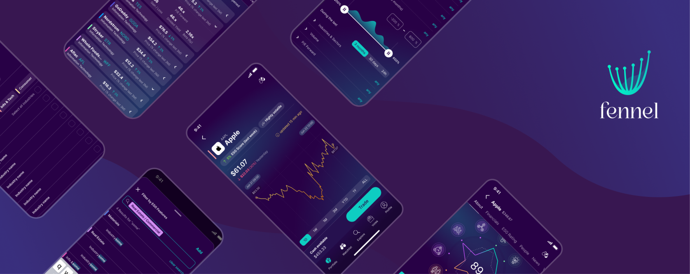
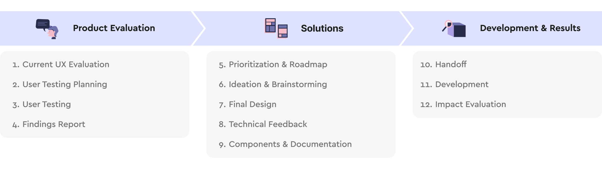
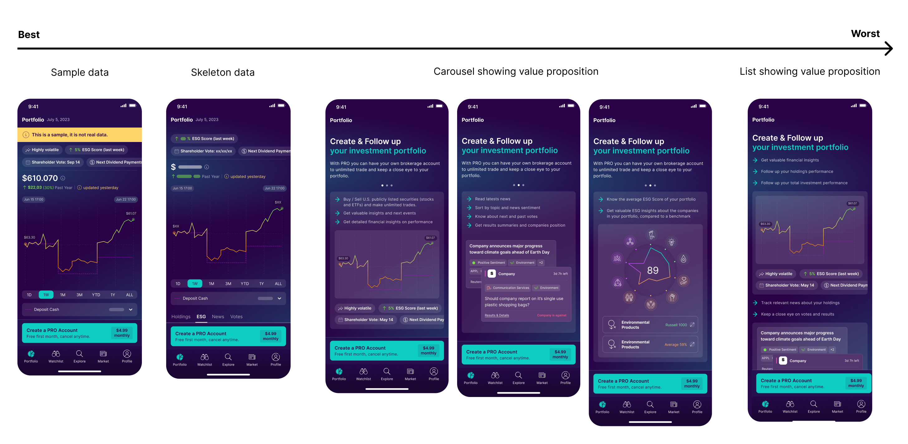
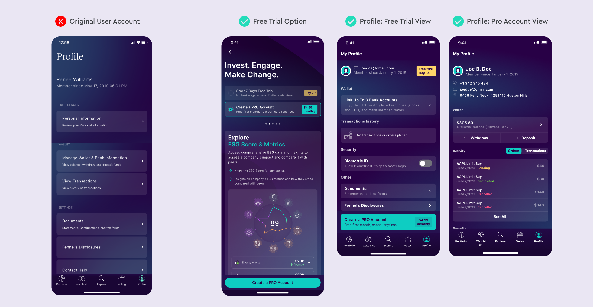
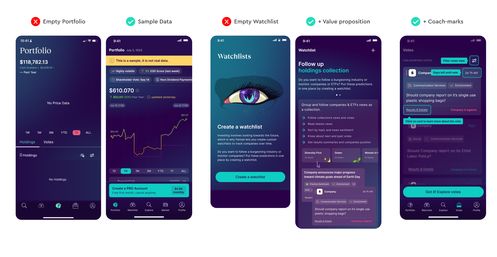
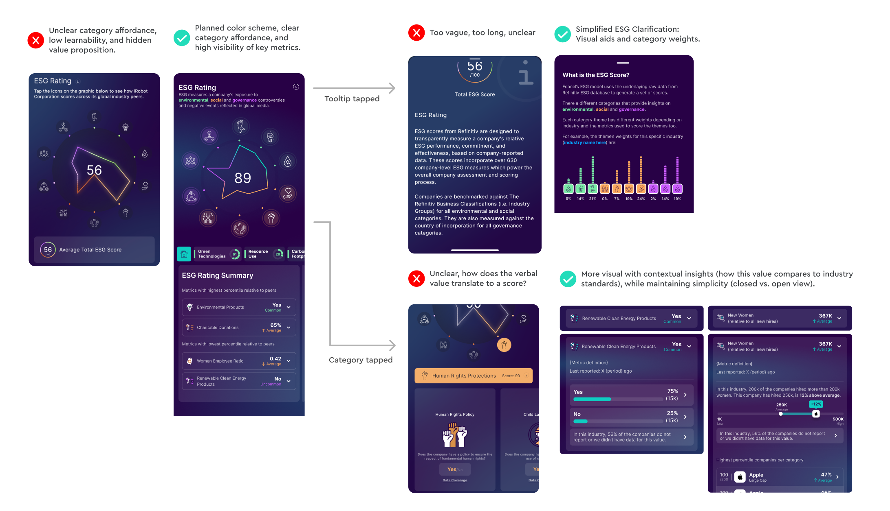
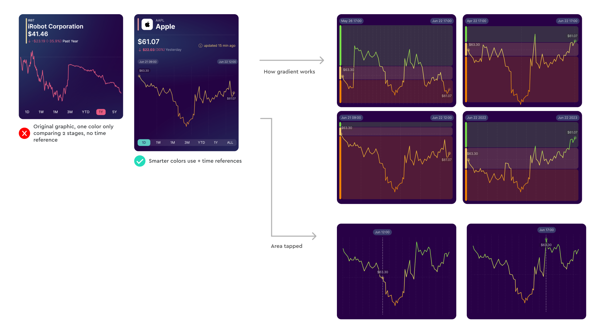
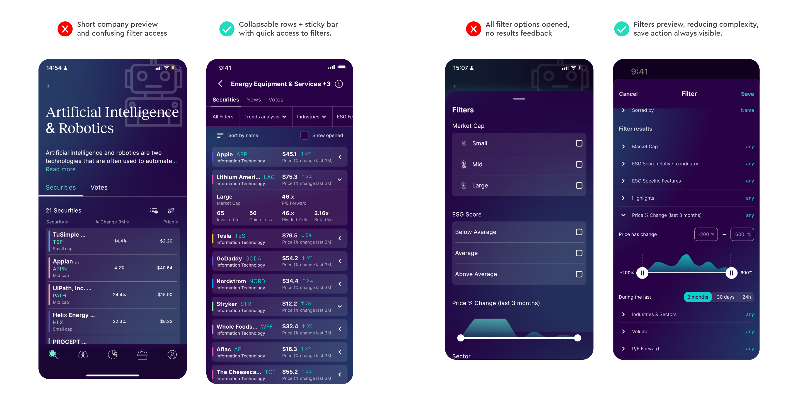

Fennel: Invest in What You Believe
NYC · 2023 · Freelance Product Designer
The Brief
Fennel is an investment app that lets users evaluate companies through an ESG lens — making conscious investment decisions based on environmental, social, and governance data. The app was already live on the App Store with a limited user base when they brought me in as a freelancer.
The goal wasn't to redesign from scratch — it was to identify what was actually broken, understand why, prioritize what mattered most, and design targeted solutions. That meant starting with research before touching any screen.
Team
- Lead Designer: Stefania
- Manager: CEO
- Collaborators: A Product Designer who introduced me to the product; a Marketing team member who coordinated user recruitment for testing; the development team for feasibility feedback; and a compliance team who reviewed designs against regulatory requirements.
Process
The project followed a structured research-first process before any design work began:

- UX Evaluation: Assessed the current experience to identify potential issues and blind spots, followed by team sessions to surface internal concerns and product priorities.
- User Testing Planning: Developed a testing script grounded in the identified issues. Tasks were designed to surface real usability problems, not just confirm assumptions.
- User Interviews: Started each session with open-ended questions to build rapport and uncover needs users wouldn't articulate during structured tasks. This consistently surfaced issues the team hadn't anticipated.
- Findings Report: Classified all findings by severity — Critical (blocking tasks or eroding trust), Relevant (improvement opportunities without blocking usability), and Non-Blocker (minor or subjective issues) — and presented recommendations with rationale.
- Prioritization & Roadmap: Cross-referenced user findings with existing product metrics and the roadmap to sequence the highest-impact changes first.
- Ideation & Brainstorming: Led collaborative sessions with the team to generate solutions, including sketching and wireframing. Proposals were reviewed with engineering early to filter for feasibility before investing in detailed design.

- Final Design: Consolidated the strongest ideas into final designs and prototypes. Tested again with users where needed, refined based on feedback, then prepared for handoff.
- Components & UX Documentation: Created or updated Design System components in alignment with the other designer, including state and behavior documentation.
- Handoff & Impact Evaluation: Delivered specs to the development team, then conducted a post-launch evaluation to assess the effectiveness of changes and flag further opportunities.
User Testing
I began by evaluating the app's current state independently — mapping potential friction points before talking to users. This gave me hypotheses to test rather than going in cold.
The testing script combined open-ended questions with specific tasks. Open questions first: how do you feel about the app? What have you used it for? This surfaces unmet needs and emotional responses that structured tasks rarely reveal. Then task-based testing on the flows the team most needed to validate — including flows they were uncertain about at a business level.
After the sessions I compiled a UX report with prioritized findings and actionable recommendations. The report also identified distinct user personas, opening up a productive team debate about who Fennel was really targeting — a conversation that shaped subsequent prioritization.
Onboarding
Onboarding touches every user, creates the first impression, and is the most powerful lever for retention. When I joined, Fennel only had a paid version available to a team-invited group. Even within that friendly cohort, several critical issues surfaced.


Value Proposition: ESG Data Clarity
Fennel's core differentiator is ESG data — but that data was creating confusion rather than confidence. These were classified as Critical findings: if users don't trust the data, the entire value proposition collapses.


Search and Compare

Impact and Learnings
The most consequential decision in this project was starting with open-ended interviews before structured usability testing. The trust issues around onboarding — the single biggest finding — would likely not have surfaced through task-based testing alone. Users talked about their feelings during those early conversations in ways they never would have during a defined task. That combination of methods consistently surfaces a more complete picture than either approach alone.
The ESG data clarity work reinforced something specific to fintech and data-heavy products: when users can't understand how a number was derived, they don't just feel confused — they assume something is wrong. Transparency about methodology isn't a nice-to-have; it's load-bearing for trust. The solution wasn't to simplify the data but to make the logic behind it visible.
Working within compliance constraints on the subscription flow was a useful forcing function. The form couldn't be shortened. That constraint pushed the solution toward progress-saving and cross-platform access — improvements that were genuinely better for users, and wouldn't have been explored if the obvious fix (shorten the form) had been available.